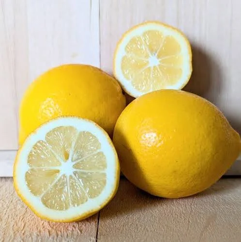
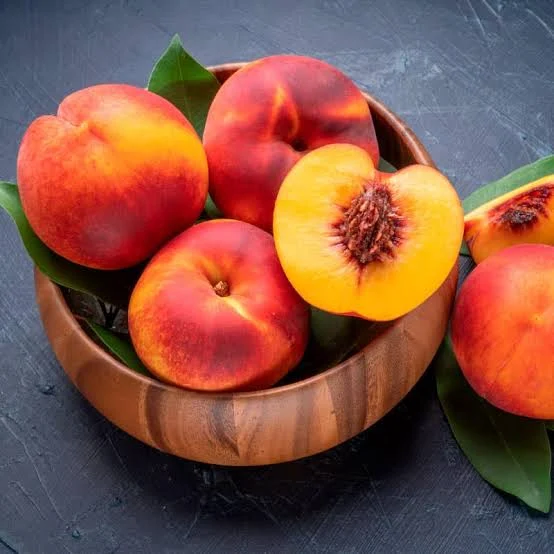
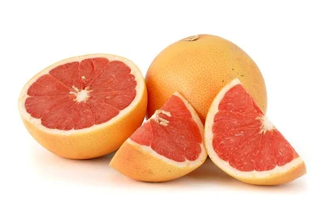

Frucimu
 |
 |
 |
|---|---|---|
| Nuestros limones destacan por su piel brillante, aroma vibrante y un equilibrio perfecto entre acidez y frescura. Cultivados con esmero para garantizar el máximo contenido de zumo, son el ingrediente indispensable tanto en la alta cocina como en el día a día. Aportan un toque cítrico limpio y natural que realza platos, repostería y bebidas, asegurando siempre la máxima calidad desde el árbol hasta tu mesa. | Seleccionados en su punto óptimo de maduración, nuestros melocotones ofrecen una pulpa carnosa, extremadamente jugosa y un dulzor aromático irresistible. Su piel aterciopelada esconde todo el sabor del verano y de la tierra bien trabajada. Son la opción ideal para disfrutar al natural como un bocado saludable, así como para elaborar postres, mermeladas o dar un contraste dulce a recetas frescas. | Nuestros pomelos combinan una pulpa firme y llena de zumo con ese característico matiz entre ácido, dulce y ligeramente amargo que los hace únicos. Ricos en vitamina C y antioxidantes, son el aliado perfecto para desayunos llenos de energía, zumos naturales o para aportar sofisticación a ensaladas y platos gourmet. Un cítrico refrescante con personalidad propia para los paladares más exigentes. |